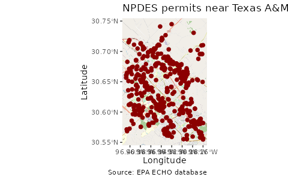

Spatial echor Data
Michael Schramm
2024-05-15
Source:vignettes/articles/spatial_data.Rmd
spatial_data.Rmdechor can also return spatial data frames known as
simple features (https://r-spatial.github.io/sf/), to facilitate creation
of maps. Both echoAirGetFacilityInfo and
echoWaterGetFacilityInfo include arguments to return simple
feature dataframes.
Using sf, ggplot, and
ggspatial we can quickly create a map of downloaded
data.
library(echor)
library(ggplot2)
library(ggspatial)
library(dplyr)
library(sf)
## Download data as a simple feature
df <- echoWaterGetFacilityInfo(p_c1lon = '-96.407563', p_c1lat = '30.554395',
p_c2lon = '-96.25947', p_c2lat = '30.751984',
output = 'sf')
## Make the map
ggplot(df) +
annotation_map_tile(zoomin = 0, progress = "none") +
geom_sf(inherit.aes = FALSE, shape = 21,
color = "darkred", fill = "darkred",
size = 2) +
labs(x = "Longitude", y = "Latitude",
title = "NPDES permits near Texas A&M",
caption = "Source: EPA ECHO database")